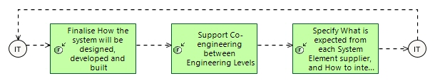

Frame sub-Systems & Constituents Design & Development
Engineering Process
Engineering Capabilities > Support Collaboration in Engineering > Frame sub-Systems & Constituents Design & Development
This process illustrates how need and solution definition outputs should drive the definition, design and development of solution constituents.
Related Diagrams
3 Frame subSystems Constituents Design Development

This process illustrates how need and solution definition outputs should drive the definition, design and development of solution constituents.
Contribution of each engineering activity to this process
| Engineering activity | Specifics of activity for this process |
|---|---|
|
|
|
|
|
|
|
|